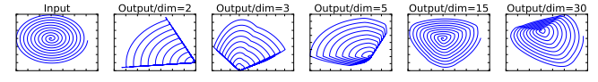
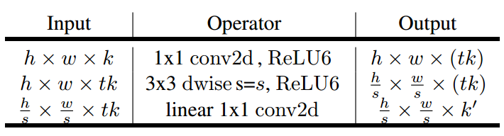
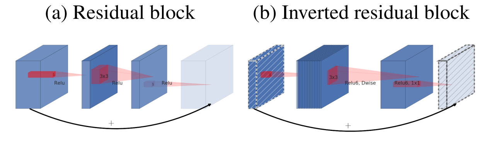
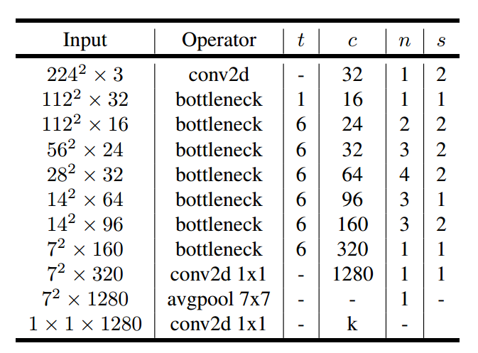

Giới thiệu
Từ sự thành công của MobileNet (2017) trong việc triển khai các mô hình Deep Learning trên các thiết bị biên (smartphone, embedded,…) nhờ vào việc sử dụng hiệu quả phép toán depthwise separable convolution, nhiều nghiên cứu dựa trên hướng phát triển này đã được tiến hành.
Dựa theo các “kinh nghiệm” có được của bản thân, nhìn vào MobileNet thì ta sẽ thấy ngay rằng, nó chưa có cái skip connection nào cả 😀 Đúng z, skip connection đã cho thấy được sự hiệu quả của mình trong các mô hình như ResNet, Inception-ResNet, DenseNet,… tại sao ta không thử thêm vào MobileNet? Boom, thêm ngay!
MobileNetV2 được công bố với sự kế thừa từ MobileNet và bổ sung thêm skip connection. Tất nhiên là không chỉ dừng ở đó 🙂 Các tác giả xây dựng MobileNetV2 dựa trên các inverted residual block, nơi mà các skip connection dùng để kết nối các bottleneck layer với nhau! Hơn nữa, ta còn có một điểm rất thú vị là các bottleneck layer này sử dụng activation function là linear!
MobileNetV2 đạt được độ chính xác cao hơn MobileNet trên tập ImageNet, với số tham số ít hơn, lượng bộ nhớ cần dùng tại mỗi layer là ít hơn. Từ sự ra đời của mô hình này, người ta cũng đã phát triển các mô hình hiệu quả trong bài toán Object Detection như SSDLite, hay Semantic Segmentation như Mobile DeepLabv3
Bàn về ReLU
Ta biết rằng từ khi paper AlexNet giới thiệu activation function ReLU thì nó đã trở thành một activation function rất phổ biến và được dùng thường xuyên trong các mô hình Deep Learning với điểm mạnh quan trọng là đạo hàm của nó rất đơn giản. Công thức của ReLU là
$$ReLU(x) = \max(x, 0)$$
, tức là nó sẽ “vứt” những giá trị bé hơn 0 trong input. Điều này nghĩa là ta sẽ bị mất thông tin!. Nếu input truyền vào là một channel thì ta sẽ bị mất một lượng thông tin nhỏ (hoặc có thể là lớn) trên channel đó.
Activation function ReLU
Nguồn: Research Gate
{kind=link}
Vậy tại sao trước giờ ReLU vẫn luôn được sử dụng?
- Điều quan trọng là chúng ta có rất nhiều channel và giữa các channel này có những mối liên hệ nhất định. Do đó, việc mất thông tin ở một channel này có thể được channel khác bù đắp. Như vậy là ok.
Để minh họa cho yếu tố làm mất thông tin, các tác giả đưa ra ví dụ sau:

- Ban đầu, input của ta ở không gian 2 chiều. Qua phép biến đổi bằng một ma trận $T$ bất kì và áp dụng ReLU, ta có các output ở các không gian có số chiều khác nhau là 2, 3, 5, 15, 30. Để xác định xem thông tin có bị mất hay không, ta chiếu các output này về lại không gian 2 chiều bằng cách dùng ma trận nghịch đảo $T^{-1}$. Khi đó, kết quả thu được là các hình tương ứng ở trên. Rõ ràng là tính chất ban đầu của input đã bị mất.
Gỉa sử từ một input $D_F \times D_F \times M$, qua một số layer thì ta có output $D_F \times D_F \times N$ và ta chuẩn bị áp dụng ReLU cho output. Các tác giả chứng minh được rằng ReLU sẽ không làm mất thông tin ban đầu của input nếu như $N < M$. Điều này có thể phát biểu bằng lời là nếu một input có thể được embedded (hay là nén) vào một không gian ít chiều hơn (số channel ít hơn) thì việc áp dụng ReLU lên kết quả nén đó sẽ không làm mất thông tin.
- Ở ví dụ phía trên thì ta đã có $N \geq M$ và thông tin thật sự là đã bị mất.
Từ nhận xét trên, ta thấy rằng không phải lúc nào xài ReLU cũng tốt. Nếu ngẫm lại, trong các kiến trúc như VGG, ResNet, Inception, MobileNet thì số channel của chúng hầu như luôn tăng qua từng block (chính là cụm “một số layer”) nhưng activation function được sử dụng luôn là ReLU. Điều này là vì chúng có rất nhiều channel (tăng theo bội 2) nên mọi thứ vẫn ổn 😀
- Nếu bạn thắc mắc là vì sao số channel thường tăng như vậy thì trong CNN, những conv layer đầu thường sẽ học những đặc trưng đơn giản như cạnh ngang, dọc, chéo, vị trí của đối tượng trong ảnh,… càng về sau thì sẽ có các đặc trưng cụ thể, nổi bật lên của đối tượng (ví dụ như tai mèo, mắt mèo, mũi mèo,…). Do đó, càng về sau thì ta nên có càng nhiều channel đễ học được nhiều đặc trưng.
Linear bottleneck
Đầu tiên, ta sẽ nhắc lại về bottleneck layer. Đây là dạng layer thường được dùng với mục đích là “cô đọng kiến thức” của mô hình, hay nói rõ hơn là nén lượng thông tin lại sao cho vừa giữ được thông tin và vừa tiết kiệm tài nguyên (bộ nhớ, độ phức tạp tính toán).
Những phát hiện về ReLU như đã đề cập là nguồn gốc của các linear bottleneck được sử dụng trong MobileNetV2.
Tại sao lại là linear mà không tiếp tục dùng ReLU rồi tăng số channel như những block trước?
Việc giảm số channel trong các layer sẽ giảm lượng tham số của mô hình, từ đó giảm được độ phức tạp tính toán. Do đó, nếu xây dựng được một kiến trúc mà số lượng channel trong mỗi layer là nhỏ thì nó sẽ rất phù hợp cho các thiết bị biên. Các tác giả hướng đến việc giữ cho số channel của input và output của các block là nhỏ, tức là số channel chưa chắc đủ nhiều để đảm bảo rằng ReLU không làm mất thông tin 😜.
- Nếu mà toàn các output có channel nhỏ như vậy thì làm sao mà mô hình đạt hiệu quả được? Lí do là vì nó là output của các bottleneck nên vẫn ok 😀
Số channel trong các layer của MobileNetV2
Nguồn: Machine Think
{kind=link}
Inverted residual block và expansion factor
Inverted residual block là thành phần chính xây dựng nên MobileNetV2. Trong block này, ta sẽ áp dụng cả dethwise separable convolution, linear bottleneck và skip connection.
Tuy nhiên, lưu ý rằng số channel của input và output của các block này là rất nhỏ. Qua hình ở trên thì ta thấy chúng chỉ quanh quẩn 16, 24, 32. Do đó, trước khi áp dụng depthwise separable convolution lên input thì các tác giả thực hiện giải nén (expansion) lượng kiến thức trong input (input này là output của một block trước đó, nơi mà kiến thức đã được nén lại bởi linear bottleneck).
-
Về mặt trực giác, lí do của thao tác này có thể hiểu là ta sẽ thực hiện convolution trên thông tin đầy đủ hơn để có thể phát hiện được càng nhiều đặc trưng càng tốt).
-
Việc giải nén thực chất là ta sử dụng một conv layer $1 \times 1$, với số lượng filter sẽ bằng với số lượng channel của input nhân với một siêu tham số. Siêu tham số này gọi là expansion factor và được kí hiệu là $t$.
Tiếp đến, theo sau phép toán depthwise separable convolution thì ta sẽ sử dụng linear bottleneck để tính ra output của block.
Như vậy, điểm qua các layer sẽ có trong inverted residual block sẽ bao gồm:

- Lưu ý. Layer “linear 1x1 conv2d” chính là linear bottleneck.
Tùy theo giá trị số channel $k$ và $k’$ có bằng nhau hay không mà ta sẽ áp dụng thêm skip connection. Hơn nữa, các skip connection trong inverted residual block được dùng để nối các bottleneck layer với nhau!
- VÌ sao lại là nối bottleneck chứ không phải nối các layer khác? Output của bottleneck là các “kiến thức” đã được cô đọng, đây là những gì mà mô hình đã học được và được biểu diễn trong một không gian ít chiều hơn. Do đó, ta vừa tiết kiệm được tài nguyên và vừa liên kết được các kiến thức quan trọng với nhau.
Trong cài đặt, tùy theo giá trị stride của depthwise conv layer mà ta sẽ áp dụng skip connection hoặc là không. Cụ thể như sau:
Inverted Residual Block với stride=1 (có skip connection) và stride=2 (không có)
Ngoài ra, ta có thể thấy trong inverted residual block thì activation được dùng cho 2 layer đầu tiên là ReLU6. Đây là một biến thể của ReLU, nó giới hạn giá trị output nằm trong đoạn $[0, 6]$ nhằm đảm bảo sự ổn định trong tính toán với số chậm động.
Activation function RELU6
Nguồn: Mmuratarat
{kind=link}
Để dễ hình dung hơn về inverted residual block, ta cùng xem một ví dụ cho quá trình tính toán với expansion factor là 6:

Nguồn: Machine Think
Lưu ý.
-
Các tác giả có đề cập thêm đến luồng truyền thông tin của MobileNetV2, yếu tố mở ra những hướng phát triển tiếp theo trong tương lai. Ta thấy rằng inverted residual block đã tạo ra được sự độc lập giữa số channel của intput/output của block và của các layer nằm bên trong block:
- Phần bên trong được gọi là layer transformation với những phép biến đổi phi tuyến. Ta hoàn toàn có thể nghiên cứu thêm những cách xây dựng bộ phận này để tăng độ hiệu quả của mô hình.
-
Nếu expansion factor của ta < 1 thì block này sẽ rất giống với block trong ResNet:

Kiến trúc MobileNetV2
MobileNetV2 được xây dựng dựa trên việc sử dụng nhiều inverted residual block. Kiến trúc tổng quan của nó như sau:

Trong đó:
- $t$ là expansion factor.
- $c$ là số output channel của phần bottleneck trong inverted residual block.
- $n$ là số lần sử dụng block.
- $s$ là stride của block đầu tiên trong dãy $t$ block liên tiếp nhau, các block còn lại trong dãy có stride 1.
- Toàn bộ filter được sử dụng đều là $3 \times 3$.
Cài đặt
Các bạn có thể tham khảo phần cài đặt MobileNetV2 bằng Tensorflow và Pytorch tại repo sau.
Tài liệu tham khảo
- Paper MobileNetV2: https://arxiv.org/abs/1801.04381
- MachineThink, MobileNet version 2